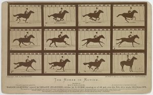
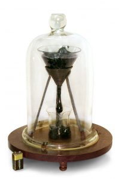
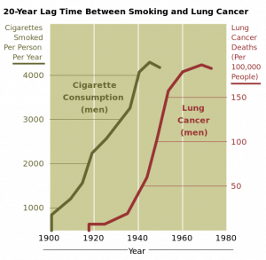

Learning outcomes
By the end of Chapter 1 you should be able to do each of these. The tag shows where it is covered.
- 1.1Contrast objective vs. subjective observations, and quantitative vs. qualitative observations.
- 1.1Identify a pseudoscience by its lack of falsifiability.
- 1.3Contrast the methods Aristotle and Galileo used to describe the natural world.
- 1.2Explain the scientific method and apply it to a problem or question.
- 1.4Describe the foundations of modern geology, such as uniformitarianism, and contrast it with catastrophism.
- 1.5Explain why studying geology is important, and how Earth materials change through the rock cycle.
- 1.6Describe the steps of a reputable scientific study and explain the rhetorical arguments used by science deniers.
How to use this guide
Underlined words are key terms. Click one, or open Key terms at the bottom right, to read and search every definition from this chapter.
1.1What is science?
Scientists seek the fundamental principles behind natural patterns and processes. Science is more than a body of knowledge: it is a way to evaluate and create new knowledge without bias, by relying on objective rather than subjective evidence.
Observations: objective vs. subjective
An is free of personal bias and the same for everyone. A is based on a person's feelings and beliefs and is unique to them. Humans are biased by nature, so the goal is to be as unbiased as possible.

Measurements: quantitative vs. qualitative
Scientists also reduce bias by preferring measurements (a specific number) over ones (general or relative descriptions). Numbers are more precise and can be analyzed statistically.
| Property | Qualitative | Quantitative |
|---|---|---|
| Color | "The rock is red." | Measure the wavelengths of reflected light. |
| Density | "The rock is heavy." | Measure the proportions of minerals it contains. |
Falsifiability and pseudoscience
All scientific claims are : any hypothesis can be tested and proven false. Only after false results, competing ideas, and variations are exhaustively eliminated does a hypothesis become a reliable . Proving current ideas wrong has driven many scientific careers.
Falsifiability separates science from , a collection of ideas that may look scientific but does not use the scientific method. Astrology is an example: it claims celestial movements influence human behavior, but its conclusions are not based on experimental evidence and its statements cannot be falsified. Do not confuse it with astronomy, the scientific study of celestial bodies and the cosmos.
Example from the chapter
Canyons carved into the loose deposit from the May 18, 1980 eruption of Mt. St. Helens are sometimes cited by pseudoscience as evidence of a very young Earth. In reality, that unconsolidated, unlithified volcanic deposit erodes far more easily than rock in canyons like the Grand Canyon.
Science is a social process
Scientists share ideas at conferences, in publications, and even on field trips. Submitted papers undergo by experts in the same field, which weeds out misinformation, invalid results, and wild speculation. The process is slow, cautious, and conservative: a hypothesis is accepted as theory only after overwhelming evidence from many independent researchers.
Check yourself: Section 1.1 quiz in the textbook ↗
1.2The scientific method
Modern science rests on the . It has a long history, but was first fully formed by Ibn al-Haytham over 1,000 years ago. Its core is that conclusions come from objective evidence, not opinion or hearsay.
Step 1: Observation, problem, or research question
Identify a problem or question, such as a geological phenomenon the scientific community has not explained well. This usually means reviewing the scientific literature for related previous studies.
Step 2: Hypothesis
Propose a possible answer, a , before the experiment or field work. It must be specific, falsifiable, and based on other scientific work. Geologists often use because they usually cannot impose strict experimental controls and may have limited chances to visit a field site.


Step 3: Experiment and hypothesis revision
Design an that either supports or refutes the hypothesis. Experiments are not only lab work: observing natural processes in the field counts too. Every experiment involves the systematic gathering of objective data. If the data contradict the hypothesis, it is revised and tested again. A hypothesis that holds up is ready to share with experts.
Step 4: Peer review, publication, and replication
Results are published in journals such as Science and Nature, but only after rigorous peer review of the methods, results, and discussion. After publication, other scientists try to replicate the results, which is necessary to confirm reliability. New technology can later confirm or reject once-accepted ideas.
Step 5: Theory development
In casual talk, "theory" means a guess. In science, a is the best explanation after a hypothesis has been repeatedly tested by documented, independent studies and widely accepted. A hypothesis is a tentative explanation before an experiment; a theory is confirmed by many experiments after.
| Idea | Origin | What happened |
|---|---|---|
| Continental drift → plate tectonics | Alfred Wegener, 1912 | Initially dismissed. After decades of new evidence from more advanced technology, it was accepted and revised as the theory of plate tectonics. |
| Evolution by natural selection | Charles Darwin, mid-19th century | Has withstood generations of testing; updated with modern technology and still supported by the latest evidence. |
Check yourself: Section 1.2 quiz in the textbook ↗
1.3Early scientific thought
Western scientific thought began in ancient Athens, a democracy that encouraged independent thinking. Foremost among early philosopher-scientists was Aristotle (born 384 BCE), who studied under Plato and tutored Alexander the Great. He used , which values evidence from experimentation and observation.
Deductive vs. inductive reasoning
| Deductive reasoning | Inductive reasoning | |
|---|---|---|
| Direction | General principle → specific conclusion | New observations → general principle |
| Basis | A logical connection | Analysis of measurable evidence |
| Example | All birds have feathers; a sparrow is a bird; so a sparrow has feathers. (Also: if A=B and B=C, then A=C.) | List bird traits (feathers, toothless beak, hollow bones, no forelegs, externally laid eggs), check whether bats share them; they don't, so bats are not birds. |
| Weakness | A flawed starting principle gives a flawed conclusion: "All animals that fly are birds; bats fly; so bats are birds." | Not discussed in the chapter. |
| In the chapter | Aristotle's method | Closer to Galileo's evidence-based approach, which the chapter contrasts with Aristotle's |
From Rome to the Renaissance
Alexander spread Greek culture, which the Romans absorbed and carried into Europe. After Rome fell in 476 CE, European science stalled; medieval thinkers followed Aristotle's logic faithfully for centuries. Meanwhile science flourished in the Middle East between 800 and 1450 CE. Avicenna (Ibn Sina) was among the first to link mountains to earthquakes and erosion. During the Renaissance (14th–17th centuries), scholars began criticizing the Aristotelian approach, setting up empiricism as a key part of the 17th-century scientific revolution.
Geocentric vs. heliocentric
In the 2nd century, Greek astronomer Claudius Ptolemy applied Aristotelian logic and deductively reasoned that all celestial bodies orbit Earth at the center of the universe: the . It persisted until the Renaissance. Between 1507 and 1515, Nicolaus Copernicus (1473–1543) gave mathematical proof for a (Sun-centered) model. After the telescope was invented in 1608, better observations supported it.
Kepler, Galileo, and the scientific revolution
Johannes Kepler (1571–1630), a German mathematician and astronomer, improved Copernicus' calculations and described planetary orbits as elliptical. Galileo Galilei (1564–1642), an Italian astronomer, used the new telescope to observe Jupiter's four largest moons. This was the first direct evidence against the geocentric model, since moons orbiting Jupiter could not also orbit Earth. Galileo's support of heliocentrism put him at odds with prevailing views and the Catholic Church; in 1633 he was found guilty of heresy and kept under house arrest until his death in 1642.

Why Galileo is "the first modern scientist"
He ran experiments to prove or disprove falsifiable ideas and based conclusions on mathematical analysis of quantifiable evidence. That was a radical departure from the deductive thinking of Greek philosophers such as Aristotle, and it began a shift toward evidence and experiment that set the stage for geologists such as Hutton and Steno.
Check yourself: Section 1.3 quiz in the textbook ↗
1.4Foundations of modern geology
Modern geologic principles developed during the 17th and 18th centuries as part of Europe's scientific revolution.
- Aristotle born; deductive, empirical reasoning.
- Ptolemy's geocentric model.
- Ibn al-Haytham first fully forms the scientific method.
- Copernicus's heliocentric model.
- Galileo observes Jupiter's moons; Kepler describes elliptical orbits. (Telescope invented 1608.)
- Nicolaus Steno: Earth's surface can change; sedimentary layers form horizontally, oldest at the bottom.
- James Hutton: uniformitarianism; Earth is very old.
- Georges Cuvier: catastrophism; first to suggest species can go extinct.
- Charles Lyell's Principles of Geology popularizes uniformitarianism.
- Alfred Wegener proposes continental drift.
- Sub-sea discoveries by Tharp, Heezen, Hess, Wilson and others lead to plate tectonics.
Steno and Hutton
Nicolaus Steno (1638–1686), a Danish priest who studied anatomy and geology, was the first to propose that Earth's surface could change over time. He suggested that sedimentary rocks such as sandstone and shale formed in horizontal layers, with the oldest on the bottom.

In the 18th century, Scottish naturalist James Hutton (1726–1797) compared sediments left by rivers and coastlines with exposed sedimentary rock strata. He hypothesized that ancient rocks formed by the same processes seen today. Because those processes are slow, Earth must be very old, possibly hundreds of millions of years.
This is the principle of : natural processes operate the same now as in the past, so the laws of nature are uniform across space and time. Geologists summarize it as "the present is the key to the past."
Uniformitarianism vs. catastrophism
| Catastrophism | Uniformitarianism | |
|---|---|---|
| Main idea | Rocks and landforms formed by great catastrophic events; processes of today did not operate in the past. | Natural processes operate the same now as in the past. |
| Key people | Abraham Gottlob Werner (1750–1817), Georges Cuvier (1769–1832) | James Hutton; popularized by Charles Lyell (1797–1875) |
| Earth's age | Not stated in the chapter | Very old; Lyell suggested possibly over 300 million years |
| Legacy | Cuvier, the "father of vertebrate paleontology," was first to suggest species could go extinct, but thought new species appeared by special creation after catastrophic floods. | Became so dominant that catastrophic change was treated as heresy, which slowed acceptance of ideas like an asteroid impact ending the dinosaurs. |
"The thread of operation is broken; nature has changed course…"Georges Cuvier, defending catastrophism (quoted in Chapter 1)
Lyell and Darwin
Hutton's ideas were fading into obscurity until British lawyer and geologist Charles Lyell wrote Principles of Geology (early 1830s) and later Elements of Geology. His books promoted uniformitarianism and a very old Earth, and the public eventually accepted both. Charles Darwin (1809–1882) took Principles of Geology on his five-year voyage on HMS Beagle and used uniformitarianism and deep time to develop his early ideas about evolution.
Plate tectonics: a lesson in dogmatic thinking
The theory of and is perhaps the largest advance in geology's history. Ironically, rigid acceptance of uniformitarianism slowed it, because the continents were assumed to be permanent. The idea took a long time for three reasons:
- The movement is so slow it was overlooked.
- The best evidence was hidden under the ocean.
- Accepted theories had a lot of inertia; scientists resisted and ridiculed the new idea.
Alfred Wegener was the first to compile a large data set showing continents shift over time, but he was mostly ignored. Later workers, including Marie Tharp, Bruce Heezen, Harry Hess, Laurence Morley, Frederick Vine, Drummond Matthews, Kiyoo Wadati, Hugo Benioff, Robert Coats, and J. Tuzo Wilson, used new sub-sea technology to find the mid-ocean ridge, the alignment of earthquakes, and magnetic striping. Together they brought about a that made geology the science it is today.
Check yourself: Section 1.4 quiz in the textbook ↗
1.5The study of geology
Geologists apply the scientific method to Earth's materials and processes, often borrowing from physics and chemistry (for example, the forces in a landslide or the chemistry between water and rock). The word comes from the Greek geo (Earth) and logos (to think or reckon with).
1.5.1 Why study geology?
Natural resources
A is any naturally occurring material that can be extracted from Earth for economic gain. Geologists help extract fossil fuels (coal, petroleum), metals (copper, aluminum, iron), and water from streams and underground reservoirs.
| Type | Definition | Examples in the chapter |
|---|---|---|
| Fixed in quantity; depleted by consumption. | Petroleum | |
| Can be replaced or regenerated. | Solar energy, wind energy, timber |
Environmental impacts
Extracting and using resources affects the environment and human health. Burning fossil fuels releases chemicals that are unhealthy, especially for children. Mining can release toxic heavy metals such as lead and mercury into soil and waterways. Knowing how much of a resource remains, how extractable it is, and whether it is renewable helps us manage resources sustainably.
Natural hazards
are phenomena potentially dangerous to human life or property. No place is completely free of them, so understanding local geology is one of the best protections. Geologic hazards include landslides, earthquakes, tsunamis, floods, volcanic eruptions, and sea-level rise.
Earth System Science
Geology is where other sciences intersect, in . A system is a group of interacting objects and processes; Earth System Science views the planet as interacting systems, or spheres, and draws on physics, chemistry, biology, meteorology, hydrology and more.
1.5.2 Rock cycle
The is the most fundamental view of Earth materials: what they are, how they form, and how they relate. Use the diagram as a map while you read the steps below it.
- Molten rock. is molten rock below the surface (in the crust or mantle); is molten rock erupted onto the surface.
- Igneous rock. As magma or lava cools, minerals grow in it by , forming (Latin ignis, fire).
- Sediment. Rocks at the surface undergo (physical and chemical breakdown into fragments) and (removal of fragments from their original location). The fragments are : gravel, sand, silt, and clay, carried by streams, rivers, ocean currents, glaciers, and wind.
- Sedimentary rock. Sediment comes to rest by , often under water. Burial causes , and minerals from groundwater cause . Together these are , which forms such as sandstone and shale. form instead by direct chemical precipitation of minerals.
- Metamorphic rock. Extreme increases in temperature or pressure (deep burial, or contact with hot magma or lava) enlarge mineral crystals or alter them into new minerals with similar chemical makeup, forming (meta-, change; -morphos, form). If rocks melt, the cycle begins again.
1.5.3 Plate tectonics and layers of Earth
Plate tectonics is the fundamental unifying principle of geology and the rock cycle. It describes how Earth's layers move relative to each other, focusing on the of the outer layer. Plates collide, slide past each other, and split apart on the mobile below. Major landforms are created at plate boundaries. (Full detail in Chapter 2.)
| Layer | Composition | Key facts |
|---|---|---|
| Mostly silicon, oxygen, aluminum, iron, magnesium | Continental: ~50 km (30 mi) thick, low-density igneous and sedimentary rocks. Oceanic: ~10 km (6 mi) thick, high-density basalt-type igneous rock; covers ~70% of the planet. | |
| (silica, iron, magnesium) | Largest layer by volume; mostly solid; extends to ~2,900 km (1,800 mi). Its hot, flexible upper part lets plates move. | |
| Iron and nickel | ~3,500 km (2,200 mi) thick; liquid outer core and solid inner core. Motion in the core generates Earth's magnetic field. |
The is the rigid physical layer made of the crust plus part of the upper mantle; tectonic plates are pieces of it. The boundary between crust and mantle is the , whose depth the chapter maps globally (it is deeper where mountains are building).
1.5.4 Geologic time and deep time
"…we find no vestige of a beginning; no prospect of an end."James Hutton, 1788
Hutton was not exactly right (Earth had a beginning and will have an end), but he captured how hard it is for people to grasp . He did not assign Earth an age, though he was first to suggest it was very old. Today we know Earth is about 4.54 ± 0.05 billion years old, first calculated in 1956 by Caltech's Clair Patterson, who radiometrically dated a meteorite recovered in Arizona using lead isotopes. Human records are short by comparison: the study of earthquakes goes back only about 100 years, yet geologic evidence shows large earthquakes thousands of years ago.
| Eon | Era | Meaning and life |
|---|---|---|
| Hadean | Together called Precambrian time | Life appears >3,800 Ma; single-celled organisms such as bacteria dominate from 3,500 to 542 Ma (88% of geologic time). |
| Archean | ||
| Proterozoic | ||
| Phanerozoic "visible life"; last 542 Myr | Paleozoic | "Ancient life": invertebrates, fish, amphibians, reptiles. |
| Mesozoic | "Middle life"; the Age of Reptiles. Dinosaurs abound, many evolving into birds. Ends with the mass extinction of dinosaurs. | |
| Cenozoic | "New life"; the Age of Mammals. Early human (hominid) fossils appear only in its last few million years. |
are the largest divisions of time. The Phanerozoic (phaneros, visible; zoic, life) marks the spread of multicellular animals with hard parts such as shells, which are preserved as . Chapters 7 and 8 cover geologic time in depth.
1.5.5 The geologist's tools
| Tool | Setting | Used for |
|---|---|---|
| Rock hammer | Field | Sampling a fresh rock surface |
| Magnifying lens | Field | Looking at mineral details |
| Compass | Field | Measuring orientation of geologic features |
| Map | Field | Documenting the local distribution of rocks and minerals |
| Magnet | Field | Identifying magnetic minerals such as magnetite |
| Dilute hydrochloric acid | Field | Identifying carbonate minerals such as calcite, or limestone |
| Optical microscope | Lab | Mineral composition and grain size of rocks and soil |
| Laser and mass spectrometers | Lab | Chemical composition and geologic age of minerals |
| Seismograph (+ ground-penetrating radar) | Field/Lab | Recording and locating earthquakes; locating buried objects |
| Computer simulations | Lab | Turning data into testable theoretical models |
| Wells | Field | Hydrogeologists sample underground water quality and availability |
| Scanning electron microscope | Lab | Geochemists analyze minerals at the atomic level via x-rays |
| Gas chromatography | Lab | Liquids and gases trapped in glacial ice or rocks |

New technology brings new observations, which help revise or refute old ideas. Because the ultimate technology will never be invented, the ultimate observation will never be made: science keeps advancing.
Check yourself: Section 1.5 quiz in the textbook ↗
1.6Science denial and evaluating sources
Introductory courses teach accepted theory, without the opposing ideas advanced students meet later. Some groups, however, argue that established theories are wrong for ideological rather than scientific reasons. This section is about telling evidence-based information apart from pseudoscience.
1.6.1 Science denial
is arguing that established theories are wrong based on subjective ideology (social, political, or economic reasons) rather than scientific merit. The chapter's three examples are opposition to teaching evolution in public schools, to linking tobacco smoke to cancer, and to linking human activity to climate change. Climate change denial is the one most closely tied to geology.
1. Undermine the science
Claim the methods are flawed or the science is "unsettled." But scientists avoid claiming universal truths because science is falsifiable; that caution is not the same as uncertainty.
2. Attack the researchers
Claim scientists are biased by ideology or money (for example, inflating results to win grants). This is an argument.
3. Demand "balance"
Demand equal time in media and classrooms, creating the false illusion of two equally valid sides even when evidence is lopsided.
Conclusions from ideology have no place in science research and education. A flat-Earth model is not taught alongside plate tectonics, because it has been disproved by the scientific method and its supporters do not follow that method. The only way to change a scientific conclusion is a new conclusion reached through the scientific method.

Case study: tobacco
From the 1960s for about three decades, the tobacco industry used rhetorical arguments to deny a link between tobacco and cancer. Once studies overwhelmingly showed the link, the industry shifted to manufacturing doubt ("more study is needed") to delay warning labels and legislation. The chapter notes the same tactic is used today to deny human involvement in climate change.
1.6.2 Evaluating sources of information
Information is plentiful online, so anyone doing scientific inquiry must separate valid sources from pseudoscience and misinformation. Quality information comes from the scientific method. A valid (interpretation) is based on objective data, and credible data and inferences are clearly labeled and kept separate.

Checklist for a reputable study
Your ticks are not saved; this list is for working through a source as you read.
Even good journals slip
A 1998 article in the reputable journal The Lancet linked the MMR vaccine to autism. Journalists found the author had multiple conflicts of interest and had fabricated data, and the article was retracted in 2010.
Check yourself: Section 1.6 quiz in the textbook ↗
Summary
Science is a process with no beginning and no end: a full truth can never be known, but the scientific method is the best way to understand the universe. Scientists draw conclusions from objective evidence and consolidate them into unifying models. Geologists, starting with Hutton, likewise treat the study of Earth as ongoing: its 4.5-billion-year history, its resources, and its hazards. Geology also teaches how to reach credible conclusions and how to spot and stop misinformation.
Quick recap
- Objective + quantitative evidence beats subjective + qualitative.
- Falsifiability separates science from pseudoscience.
- Question → hypothesis → experiment → peer review → theory, repeating as evidence grows.
- Aristotle reasoned deductively; Galileo tested falsifiable ideas with quantitative evidence.
- Uniformitarianism ("the present is the key to the past") replaced catastrophism.
- Rock cycle: igneous, sedimentary, and metamorphic rocks transform into one another.
- Plate tectonics unifies geology; Earth is about 4.54 billion years old.
- Science denial: undermine the science, attack the scientists, demand false balance.
Check yourself: Chapter 1 review quiz in the textbook ↗
Resources
Fact-check notes
Every statement in this guide was checked against the textbook chapter. Where the chapter's numbers differ from current references, the guide keeps the chapter's value (that is what you will be tested on) and notes the update here.
| Topic | Chapter says | Current reference |
|---|---|---|
| Start of the Phanerozoic Eon | 542 Ma | 538.8 Ma (ICS chart) |
| End of the Mesozoic (dinosaurs' demise) | around 65 Ma | 66.0 Ma (ICS chart) |
| First genus Homo | about 2.2 Ma | The oldest known Homo fossil, a jaw from Ledi-Geraru, Ethiopia, is about 2.8 Ma (Villmoare et al., 2015, Science 347: 1352–1355). |
| A. G. Werner's birth year | 1750 | 1749 (Encyclopaedia Britannica, "Abraham Gottlob Werner") |
The chapter says Steno was "the first to propose the Earth's surface could change over time." That is the textbook's framing; the guide repeats it as written.
Credits
Content summarized from An Introduction to Geology, Chapter 1, © 2017 Chris Johnson, Matthew D. Affolter, Paul Inkenbrandt, and Cam Mosher, licensed CC BY-NC-SA 4.0. This guide is shared under the same license.
- Fig. 1.1: Grand Canyon of the Yellowstone © Matt Affolter (book license).
- Fig. 1.3: Eadweard Muybridge, Sallie Gardner, 1878, public domain.
- Fig. 1.4: University of Queensland pitch drop experiment, John Mainstone, CC BY-SA.
- Fig. 1.6: Galileo's manuscript on Jupiter's moons, public domain.
- Fig. 1.8: Steno's shark teeth illustration, public domain.
- Fig. 1.9: Liquefaction at Niigata, Ungtss at English Wikipedia, public domain.
- Fig. 1.14: Archaeopteryx lithographica (Berlin specimen), H. Raab, CC BY-SA.
- Fig. 1.16: Smoking and lung cancer correlation, Sakurambo from NIH data, public domain.
- Fig. 1.17: Cumulative induced seismicity, USGS, public domain.
- Figs. 1.2, 1.5, 1.7, 1.10–1.13, 1.15: drawn for this guide from the chapter text.